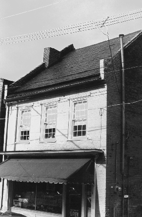

10-12 South New Street
Staunton, Virginia

Constructed: 1838-1839
Original Use: Commercial
Ownership History:
Number of Stories: 2
Exterior Features: Gabled roof. Wooden Lintels with corner blocks. Molded brick cornice.
Interior Features: N/A